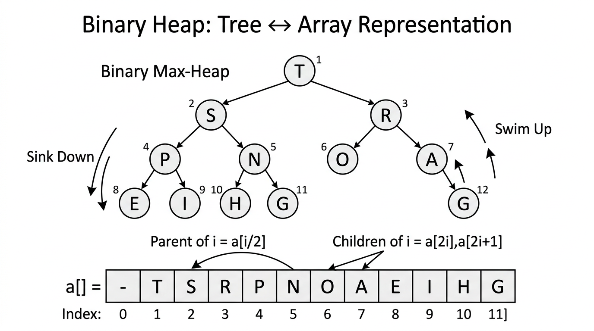

Binary Heaps & HeapSort — COMP0005 Algorithms¶
Lecture-style notes. A binary heap is a compact way to implement a priority queue and to sort in place with \(O(N \log N)\) worst-case performance. The same array stores the tree in level order with no pointers — mastery of swim and sink is central.
1. COMPLETE TOPIC SUMMARIES¶
Priority queues and the “top M from a stream” problem¶
Motivation. You receive a stream of \(N\) items and want the \(M\) largest (or smallest) items. You may not be able to store all \(N\) items at once — only \(O(M)\) memory is realistic.
Abstract data type — priority queue (PQ). Support at least:
- Insert a key.
- Delete max (for a max-oriented PQ) or delete min (for a min-oriented PQ).
For “largest \(M\) in a stream,” maintain a min-heap of size \(M\) (smallest of the top \(M\) sits at the root; evict it when something better arrives). The notes below focus on max-heaps for exposition; the same ideas flip for min-heaps.
Implementation comparison (finding \(M\) largest among \(N\) stream items, asymptotically):
| Implementation | Time | Space |
|---|---|---|
| Array & sort | \(O(N \log N)\) per batch if you store all \(N\) | \(O(N)\) |
| Elementary PQ (e.g. unordered array, scan for max on delete) | \(O(MN)\) in a naive “insert + scan” pattern | \(O(M)\) |
| Binary heap | \(O(N \log M)\) with a heap of capacity \(M\) | \(O(M)\) |
Intuition. A heap keeps the “best” structure with \(\log M\)-depth operations instead of \(O(M)\) scans.
Binary tree and complete binary tree¶
- Binary tree: each node has at most two children (often called left and right).
- Complete binary tree: every level is fully filled except possibly the last level; on the last level, nodes are packed as far left as possible.
Height. For a complete binary tree with \(N\) nodes, height is \(\lfloor \log_2 N \rfloor\) (equivalently \(\Theta(\log N)\)). Here \(\log\) is base 2 unless your lecturer specifies otherwise — standard in algorithm analysis.
Why it matters: Heap operations walk from a leaf toward the root (swim) or from the root toward a leaf (sink) — at most tree height steps.
Array representation of a complete binary tree¶
Convention used here: array a, heap size N (number of active heap elements), indices start at 0.
Nodes are stored in level order (breadth-first): root, then its children left-to-right, then the next level, etc.
Navigation with integer indices (parent/child via arithmetic — no explicit pointers):
- Parent of node
i(fori > 0): index⌊(i-1)/2⌋(integer division). - Left child of
i:2i + 1(if2i + 1 < N). - Right child of
i:2i + 2(if2i + 2 < N).
Why complete trees? They pack perfectly into an array with no gaps up to N, so \(\Theta(N)\) storage is tight and cache-friendly in principle (though HeapSort is still known for mediocre cache behaviour in practice compared to tuned Quicksort).
Binary heap (max-heap)¶

{kind=link}
A max-heap is a complete binary tree satisfying heap order:
- Heap order: for every node \(i>0\), \(\texttt{a}[\lfloor (i-1)/2 \rfloor] \geq \texttt{a}[i]\) — each parent’s key is ≥ both children’s keys.
Consequences:
- The largest key is always at \(\texttt{a}[0]\) (the root).
- The tree shape is fixed by \(N\); only values violate order after an update — restored by swim or sink.
(A min-heap reverses the inequality: parent ≤ children; root is minimum.)
Heap operations¶
Insertion — swim up (swim, sometimes fix-up)¶
Idea: Insert the new key at the next free leaf (position N+1 after incrementing N), then bubble up recursively: if the node is larger than its parent, swap and recurse on the parent index.
Pseudocode:
def _parent(i):
return (i - 1) // 2
def _swap(i, j):
self.heap[i], self.heap[j] = self.heap[j], self.heap[i]
def enqueue(key):
self.heap[self.size] = key
self._sift_up(self.size)
self.size += 1
def _sift_up(i):
parent = self._parent(i)
if i > 0 and self.heap[parent] < self.heap[i]:
self._swap(i, parent)
self._sift_up(parent)
Cost: Tree height is \(O(\log N)\); each step does \(O(1)\) work and one compare with the parent → at most \(1 + \lfloor \log_2 N \rfloor\) compares in the usual counting model.
Delete max — sink down (sink, sometimes fix-down)¶
Idea: Save \(\texttt{a}[0]\). Move the last active element to the root to keep a complete tree, shrink N, then bubble down recursively: swap with the larger child only if that child is larger, then recurse.
Pseudocode:
def _left(i):
return 2 * i + 1
def _right(i):
return 2 * i + 2
def dequeue():
max_key = self.heap[0]
self.size -= 1
self._swap(0, self.size)
self.heap[self.size] = None # optional: clear removed slot
self._sift_down(0)
return max_key
def _sift_down(i):
largest = i
l = self._left(i)
r = self._right(i)
if l < self.size and self.heap[l] > self.heap[largest]:
largest = l
if r < self.size and self.heap[r] > self.heap[largest]:
largest = r
if largest != i:
self._swap(i, largest)
self._sift_down(largest)
Cost: At each level you may compare with two children → at most \(2 \lfloor \log_2 N \rfloor\) compares in the worst case (still \(O(\log N)\)).
Implementation cost summary (PQ of size M)¶
| Data structure | Insert | Delete max | Find max |
|---|---|---|---|
| Unordered array | \(O(1)\) | \(O(M)\) | \(O(M)\) |
| Ordered array | \(O(M)\) | \(O(1)\) | \(O(1)\) |
| Binary heap | \(O(\log M)\) | \(O(\log M)\) | \(O(1)\) |
Takeaway: Heaps balance fast inserts and fast delete-max while keeping the maximum instantly at the root.
HeapSort¶
Goal: Sort an array in place using heap structure.
Two phases:
- Heap construction — rearrange \(\texttt{a}[0..N-1]\) into max-heap order.
- Sortdown — repeatedly remove the maximum by swapping root with the end and sinking the new root into the smaller heap.
Heap construction (bottom-up)¶
Key trick: In a complete tree, nodes with indices ⌊N/2⌋ .. N-1 are leaves and already trivial heaps. For k from ⌊N/2⌋ - 1 down to 0, run _sift_down(k).
Analysis surprise: Total time is \(O(N)\) compares/exchanges (not \(N \log N\)). Intuition: Most nodes are near the bottom and only sink a short distance; a careful summation over levels gives linear total cost.
Sortdown (top-down)¶
Repeatedly move the current maximum to its final position at the end of the array:
After the loop, the array is sorted in ascending order (if using a max-heap and this “largest to the back” strategy).
Overall analysis and properties¶
| Aspect | Statement |
|---|---|
| Heap construction | \(O(N)\) compares/exchanges |
| Total HeapSort | \(O(N \log N)\) compares/exchanges |
| In-place | Yes (\(O(1)\) extra memory beyond the array, aside from recursion/stack if any) |
| Worst case | \(O(N \log N)\) — unlike basic Quicksort’s \(O(N^2)\) worst case |
| Stable? | No — long-distance swaps scramble equal keys |
| Cache performance | Often poorer than good Quicksort variants (non-sequential access pattern) |
Complete sorting comparison (exam reference table)¶
| In-place | Stable | Worst | Average | Best | |
|---|---|---|---|---|---|
| Selection | ✓ | ✗ | \(\sim N^2\) | \(\sim N^2\) | \(\sim N^2\) |
| Insertion | ✓ | ✓ | \(\sim N^2\) | \(\sim N^2\) | \(\sim N\) |
| MergeSort | ✗ | ✓ | \(\sim N \log N\) | \(\sim N \log N\) | \(\sim N \log N\) |
| QuickSort | ✓ | ✗ | \(\sim N^2\) | \(\sim N \log N\) | \(\sim N \log N\) |
| HeapSort | ✓ | ✗ | \(\sim N \log N\) | \(\sim N \log N\) | \(\sim N \log N\) |
2. EXAM-STYLE QUESTIONS (WITH MODEL ANSWERS)¶
Q1 — Parent/child indices¶
Question. In a 0-based heap array, what are the indices of the parent, left child, and right child of node i? What is the height of a complete binary tree with \(N\) nodes?
Model answer. Parent: ⌊(i-1)/2⌋ (for i ≥ 1). Left child: 2i+1. Right child: 2i+2 (children exist only if their index < heap size \(N\)). Height is \(\lfloor \log_2 N \rfloor\).
Q2 — Trace swim or sink¶
Question. Starting from a valid max-heap on [9, 7, 8, 3, 5, 6], suppose enqueue(10) appends 10 so the array becomes [9, 7, 8, 3, 5, 6, 10] with N = 7. List the swaps swim(6) performs until heap order is restored.
Model answer. 10 at index 6 has parent ⌊(6-1)/2⌋ = 2 (8). 10 > 8 → swap → [9, 7, 10, 3, 5, 6, 8], i = 2. Parent of 2 is 0 (9). 10 > 9 → swap → [10, 7, 9, 3, 5, 6, 8], i = 0. Stop at root. Swaps: (6,2) then (2,0).
Q3 — HeapSort phases and complexity¶
Question. Explain the two phases of HeapSort and state the asymptotic cost of heap construction, sortdown, and overall. Why is HeapSort not stable?
Model answer. Phase 1 — build-heap: for k from ⌊N/2⌋ - 1 down to 0, sink(k); \(O(N)\). Phase 2 — sortdown: while N > 1, swap root with a[N-1], decrement N, sink(0); \(O(N \log N)\) because each of \(N-1\) extractions costs \(O(\log N)\). Total: \(O(N \log N)\). Not stable because swapping the root with distant positions reorders equal elements relative to each other.
Q4 — Priority queue strategies for top M¶
Question. Compare “store all \(N\), sort” vs “binary heap of size \(M\)” for finding the \(M\) largest items in a stream of \(N\) items. Give time and space.
Model answer. Store-all + sort: \(O(N)\) space; sorting costs \(O(N \log N)\) time (and you must hold everything). Heap of size \(M\): \(O(M)\) space; each of \(N\) items does \(O(\log M)\) work → \(O(N \log M)\) time. When \(M \ll N\), the heap wins on memory and often on time vs \(N \log N\).
Q5 — Unordered vs heap vs ordered array¶
Question. For a max-oriented priority queue storing \(M\) elements, contrast unordered array, ordered array, and binary heap for insert, delete-max, and find-max worst-case times.
Model answer. Unordered array: insert \(O(1)\); find-max/delete-max \(O(M)\) (scan). Ordered array (e.g. descending): insert \(O(M)\) (shift to place); find-max \(O(1)\) at one end; delete-max \(O(1)\) if end is max and no shift needed (or \(O(M)\) if implemented with shift — typically \(O(1)\) for “remove first”). Binary heap: insert \(O(\log M)\), delete-max \(O(\log M)\), find-max \(O(1)\) (root). (Exam-safe line: heap gives logarithmic updates + constant peek.)
3. MUST-KNOW KEY POINTS¶
- Complete binary tree → level-order array; 0-based indexing: parent
⌊(i-1)/2⌋, children2i+1,2i+2. - Max-heap order: parent ≥ children ⇒ maximum at root
a[0]. - Insert: append, then
swim— \(O(\log N)\) compares (about height). - Delete max: swap root with last active index, shrink heap,
sink(0)— \(O(\log N)\), up to two compares per level when choosing the larger child. - PQ costs: heap achieves \(O(\log M)\) insert/delete-max and \(O(1)\) find-max.
- HeapSort: bottom-up build \(O(N)\) + sortdown \(O(N \log N)\) → \(O(N \log N)\) total; in-place, worst-case \(N \log N\), not stable.
- Contrast sorts: HeapSort is in-place like Selection/Insertion/QuickSort but unstable like Selection/QuickSort; MergeSort is stable and \(N \log N\) but needs linear extra space.
4. HIGH-PRIORITY TOPICS¶
🔴 Must Know¶
- Array indexing for complete trees: parent / left / right formulas with 0-based heaps.
- Max-heap invariant and why the maximum is at \(\texttt{a}[0]\).
swimvssink— when each runs (insert vs delete-max).- Pseudocode for
swimandsink(including choose larger child insink). - Heap construction loop
for k = N/2 - 1 downto 0and that it is \(O(N)\). - Sortdown loop and \(O(N \log N)\) total HeapSort time.
- HeapSort properties: in-place, not stable, \(N \log N\) worst case; poor cache relative to tuned Quicksort (qualitative).
- PQ implementation table (unordered vs ordered array vs heap).
🟡 Important¶
- Streaming “top \(M\)”: \(O(N \log M)\) time, \(O(M)\) space with a heap vs \(N \log N\), \(N\) for store-and-sort.
- Height \(\lfloor \log_2 N \rfloor\) of a complete tree with \(N\) nodes.
- Compare counts: swim ~height, sink ~\(2 \times\) height worst case.
- Sorting comparison table (in-place / stable / best-worst-average).
🟢 Useful but Lower Priority¶
- Min-heap variant for \(k\) smallest or for largest \(M\) on a stream (min-heap of size \(M\) to retain the \(M\) largest).
- Alternative conventions: some texts still use 1-based heaps; convert carefully during exams if notation differs.
- Why bottom-up build is linear (layer-sum argument); d-ary heaps as generalisation.
5. TOPIC INTERCONNECTIONS & BIGGER PICTURE¶
- Priority queues underpin Dijkstra’s algorithm, Prim’s MST, Huffman coding, event simulation, and scheduling — anywhere you repeatedly need the best pending item.
- Heaps connect trees and arrays: the same ideas appear in binary heaps, tournament selection, and some graph traversals — shape is rigid, order is maintained locally.
- HeapSort completes the comparison-sort picture with MergeSort and QuickSort: all average/worst \(\Theta(N \log N)\) in standard models (QuickSort worst \(O(N^2)\) without randomisation/medians-of-three), but different constants, stability, and memory.
- Lower bound \(\Omega(N \log N)\) for comparison sorting still applies; HeapSort is asymptotically optimal in that model but not stable and often beaten in practice by Quicksort on arrays due to cache and branch prediction.
- Selection vs HeapSort: both move extremes into place, but HeapSort uses heap structure to find the next maximum in \(O(\log N)\) instead of \(O(N)\) scanning.
6. EXAM STRATEGY TIPS¶
- Draw a small tree (7–15 nodes) alongside the array; trace
swim/sinkon paper — index arithmetic errors are the main failure mode. - If asked for parent of node i, restate integer division explicitly (
⌊(i-1)/2⌋). sink: always mention compare both children and swap with the larger (unless ties are specified).- HeapSort: separate “build heap \(O(N)\)” from “\(N\) times delete-max \(O(\log N)\)” → \(O(N \log N)\); do not claim build-heap is \(N \log N\).
- Stability: link to long-distance swaps in sortdown (equal keys can cross).
- Complexity traps: unordered array has fast insert but slow delete-max; ordered array flips the tradeoff; heap balances both to logarithmic.
- When a question says “in-place”, contrast HeapSort/QuickSort/Insertion with MergeSort’s \(\Theta(N)\) auxiliary array.
These notes align with standard COMP0005 treatments of binary heaps and HeapSort; this page uses 0-based indexing, and you should still follow your lecturer’s conventions for tie-breaking in sink and exact compare/exchange counts if they differ.